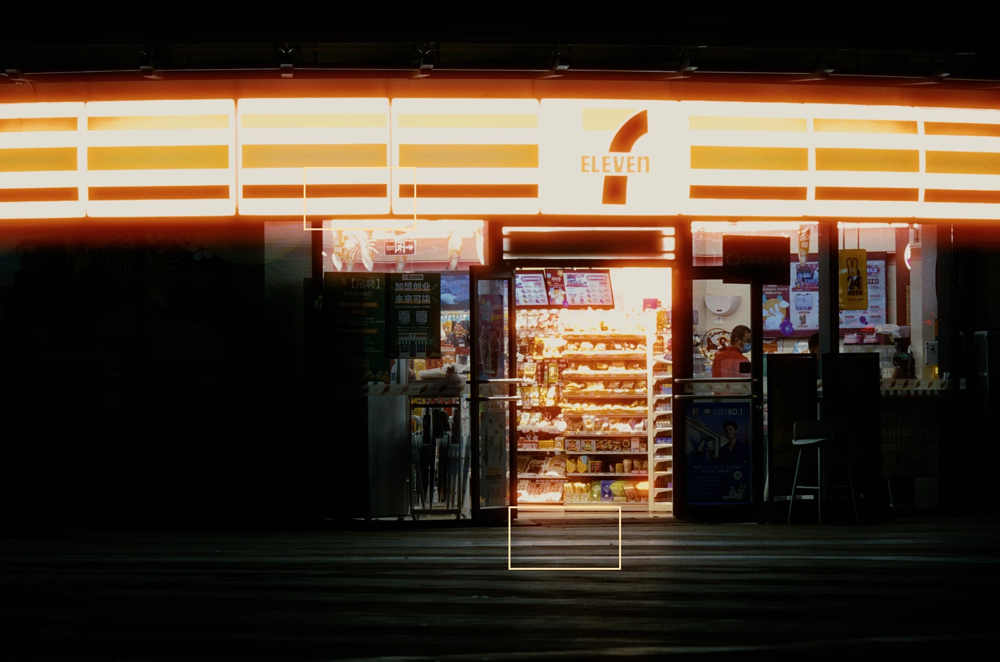
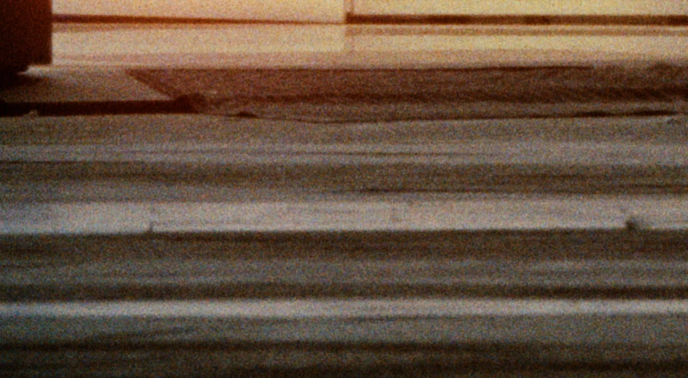

iPhone / iPad
iOS / iPadOS 18+
App StoreTestFlightOPEN SOURCE · AN APPLE DARKROOM
A photograph can have more than one print. Start with the input, choose a film, then develop and print it in an on-device darkroom.
Mac · iPhone · iPad

THE PAPER STUDY
Both simulated prints come from the same Portra 400 negative. Switch the right-hand image between papers and an unsimulated RAW reference. Look at the whole image, then inspect the petal edges and the yellow center.


Same negative and print exposure, now with Supra Endura’s built-in neutral calibration.
Open the full 2560 px comparisonApple’s RAW decode, with no film simulation.
Portra EnduraThe same Portra 400 negative, printed with Portra Endura’s built-in neutral calibration.
Supra EnduraSame negative and print exposure, now with Supra Endura’s built-in neutral calibration.
Method: +0.67 EV from metered film exposure, with the print exposure value held at 0.88. Each paper uses its built-in neutral calibration. Detail crops use the same coordinates in the 4096 px renders.
FILM STUDIES
A daylight color negative, a black-and-white negative and a tungsten color negative. Each image has its own recipe; this is not a controlled stock comparison.

Look for the pink petals’ transition into the highlights, and how the yellow center separates from the petals.

Without color, the tonal separation between feathers and background becomes the subject.
A bright sign and a dark street give halation and grain each a place to look.
AFTER DARK, UP CLOSE
In the same 800T night scene, look at the glowing edges of the sign, then the lit pavement. Both details are crops from a 7008 × 4672 render with no added sharpening.
CineStill 800T / Kodak Vision 2383
35 mm · 1× grain · Stock halation enabled


THE PROCESS
Keep the starting image, negative and print separate. When a print changes, you know which stage to return to.
Crop and Film Edge are separate tools. Controls and export options vary by platform.
Read the project documentationSet input exposure, brights and darks, contrast, detail and color. With supported RAW files, match the camera preview brightness as a starting point.
Input exposure · Tone · Midtone detail · Color
Choose a stock and film format, then adjust exposure relative to the film metering baseline. This is separate from input exposure in Prep.
Stock · Format · Metering and exposure
Adjust development at the negative stage before passing the result to color enlargement or scanning.
Negative development
Change the paper, print exposure or filtration. The lotus study holds the negative and print exposure constant to show what changing the paper does.
Paper · Print exposure · Filtration
Set up the scan and output to deliver your image. For external grading on Mac, see the Cineon DI export guide.
Scan · Output · Export

BEYOND THE FRAME
The engine renders this 135 strip’s perforations, edge markings and frame number. They are not layout overlays. The complete plate also includes four covers from the in-app library.
DOWNLOAD
Open a JPEG or an Apple-supported RAW. Make a negative with one stock, then try changing only the paper.
iOS / iPadOS 18+
App StoreTestFlightApple silicon · macOS 15+
Download for MacInstallation guideExplore the source, licenses and releases.
GitHubThe Mac DMG is ad hoc signed and is not Apple-notarized. The iPhone and iPad listing is not offered on the China mainland storefront. See the store for available versions.